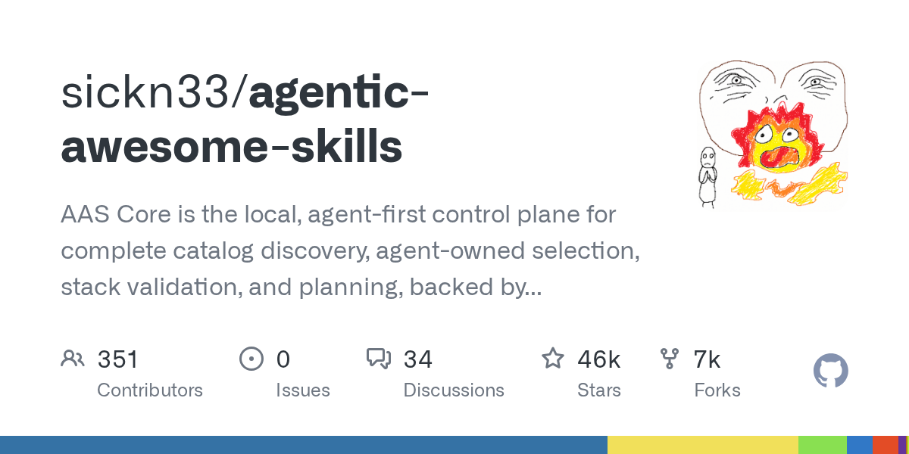
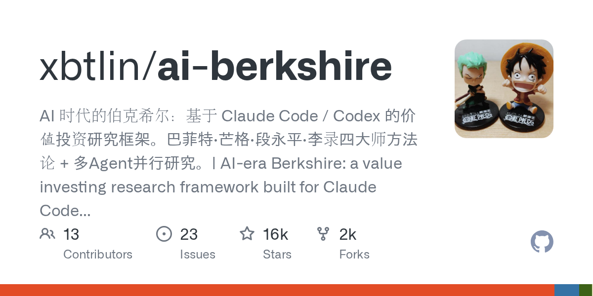
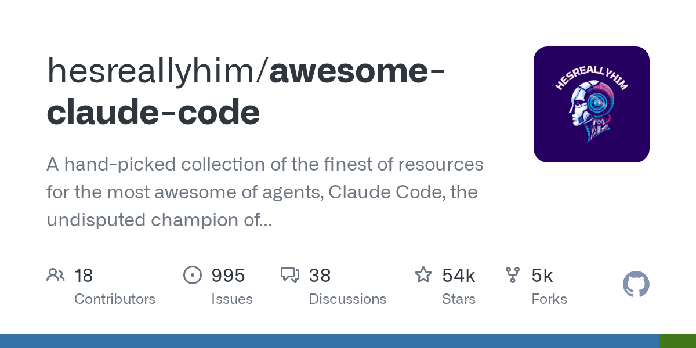
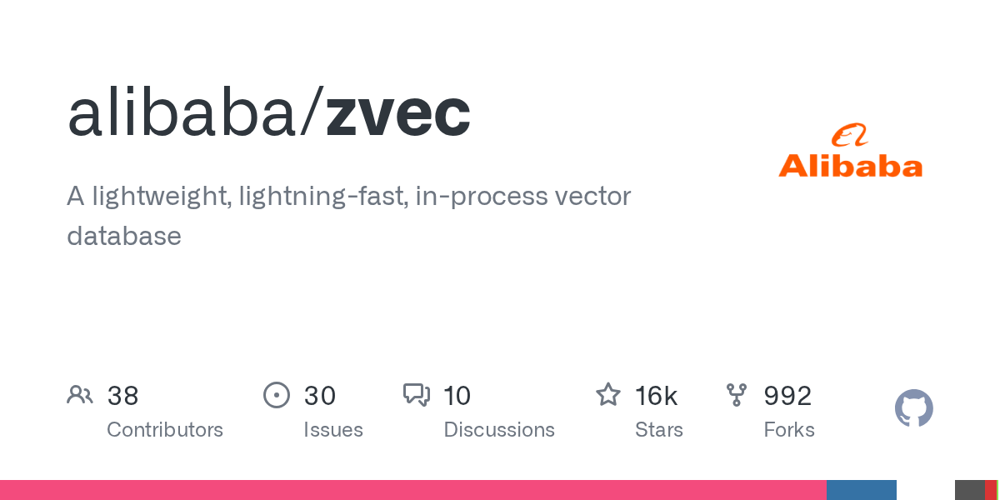

04 주요 릴리스
모델 교체를 쉽게 하는 에이전트 골격
“모델, 임베딩, 벡터 저장소를 하나의 표준 인터페이스로 묶어 바꿔 끼우기 쉽게 만든다.”
Weekly AI Brief
이번 주에는 에이전트용 스킬을 모으고, 코딩 에이전트 운용법을 정리한 저장소가 눈에 띄었다. 도구를 직접 만드는 흐름보다, 에이전트가 어떤 일을 맡고 어떤 자료를 붙여 쓸지 정리하는 방향이 강했다. 인프라 쪽에서는 서버를 따로 두지 않고 앱 안에 넣는 경량 벡터 데이터베이스의 새 릴리스가 보였고, 금융·트레이딩 영역에서는 가치투자 조사와 가상 매매 연구를 절차와 수명주기 단위로 관리하려는 저장소가 올라왔다. 라이선스 선택은 이번 목록만 보면 별도 과시보다 실무에서 바로 붙여 쓰기 쉬운 공개 저장소 중심으로 읽힌다. 사내에서는 먼저 Claude Code 자료 정리 저장소를 참고해 에이전트 운용 기준부터 시험해 보는 편이 좋다.

Editor's Pick
04 주요 릴리스
“모델, 임베딩, 벡터 저장소를 하나의 표준 인터페이스로 묶어 바꿔 끼우기 쉽게 만든다.”
05 주요 릴리스
“기본 무료 데이터원으로 바로 돌릴 수 있지만, 장기 정기 실행과 대량 분석에는 토큰형 데이터원이 더 안정적이다.”
08 인프라·런타임
“서버를 따로 세우지 않고 애플리케이션 안에 바로 넣어 쓸 수 있는 벡터 데이터베이스다.”
이번 주 가장 뜨거웠던 저장소 하나를 골랐습니다. 아래 섹션에도 그대로 실려 있습니다.
06 GitHub · shanraisshan 최근 활동 2026.09.06
스타 65,634 · 이번 주 +0 · HTML · MIT 사내 사용 가능 · 테스트 없음 · 예제 없음 · AGENTS.md 없음
shanraisshan/claude-code-best-practice는 Claude Code를 어떻게 써야 하는지 정리한 학습용 저장소다.
“이 저장소는 작업 도구라기보다 먼저 읽는 참고서에 가깝다.”
 06
06지난 7일 동안 스타가 빠르게 늘었거나 새로 등장해 주목받는 저장소입니다.
01 GitHub · sickn33 최근 활동 2026.09.05
스타 46,027 · 이번 주 +0 · Python · MIT 사내 사용 가능
sickn33/agentic-awesome-skills는 AI 에이전트가 쓸 스킬 모음과 로컬 제어 도구를 함께 묶은 저장소다.
“이 도구는 AI 에이전트가 쓸 스킬과 플러그인을 한곳에서 찾고 고르게 돕는 로컬 작업판이다.”

0102 GitHub · xbtlin 최근 활동 2026.09.06
스타 16,194 · 이번 주 +0 · HTML · MIT 사내 사용 가능 · 최근 릴리스 v1.0.0 (04.07) · 테스트 있음 · 예제 없음 · AGENTS.md 있음
xbtlin/ai-berkshire는 Claude Code와 Codex에서 쓰는 가치투자 연구용 스킬 모음이다.
“Claude Code나 Codex를 붙여 한 사람도 투자 리서치 팀처럼 일하게 하겠다는 구상이다.”

0203 GitHub · kyky2347 최근 활동 2026.09.05
스타 149 · 이번 주 +0 · Python · Apache-2.0 사내 사용 가능 · 최근 릴리스 v0.25.0 (08.27) · 테스트 없음 · 예제 없음 · AGENTS.md 있음
kyky2347/ALTA는 공개시장 조사와 가상 매매를 위한 멀티 에이전트 연구 시스템이다.
“아이디어를 채팅 답변이 아니라 수명주기로 다룬다.”
 03
03이번 주 안에 정식 릴리스를 낸 프로젝트의 의미 있는 버전 변화입니다.
04 GitHub · langchain-ai 최근 활동 2026.09.06
스타 145,732 · 이번 주 +0 · Python · MIT 사내 사용 가능 · 최근 릴리스 langchain-core==1.6.2 (09.04) · 테스트 없음 · 예제 없음 · AGENTS.md 있음
langchain-ai/langchain은 AI 에이전트와 LLM 앱을 만드는 대표 프레임워크다.
“모델, 임베딩, 벡터 저장소를 하나의 표준 인터페이스로 묶어 바꿔 끼우기 쉽게 만든다.”
 04
0405 GitHub · zhulinsen 최근 활동 2026.09.05
스타 64,670 · 이번 주 +0 · Python · MIT 사내 사용 가능 · 최근 릴리스 v3.31.0 (08.23) · 테스트 있음 · 예제 없음 · AGENTS.md 있음
ZhuLinsen/daily_stock_analysis는 여러 시장의 종목 데이터를 모아 AI가 분석 보고서와 알림을 만들어 주는 저장소다.
“기본 무료 데이터원으로 바로 돌릴 수 있지만, 장기 정기 실행과 대량 분석에는 토큰형 데이터원이 더 안정적이다.”
 05
05에이전트 프레임워크, MCP 서버, 코딩 보조, LLM 앱 개발 도구입니다.
06 GitHub · shanraisshan 최근 활동 2026.09.06
스타 65,634 · 이번 주 +0 · HTML · MIT 사내 사용 가능 · 테스트 없음 · 예제 없음 · AGENTS.md 없음
shanraisshan/claude-code-best-practice는 Claude Code를 어떻게 써야 하는지 정리한 학습용 저장소다.
“이 저장소는 작업 도구라기보다 먼저 읽는 참고서에 가깝다.”
0607 GitHub · hesreallyhim 최근 활동 2026.09.06
스타 53,573 · 이번 주 +0 · Python · 미표기 확인 필요
hesreallyhim/awesome-claude-code는 Claude Code 관련 자료를 모은 awesome 목록이다.
“본문 정보가 적어 상세한 도입 판단 자료로 쓰기에는 부족하다.”

07추론 서빙, 런타임, 양자화, GPU 커널, 벡터 DB 등 모델을 돌리는 바탕입니다.
08 GitHub · alibaba 최근 활동 2026.09.04
스타 15,796 · 이번 주 +0 · C++ · Apache-2.0 사내 사용 가능 · 최근 릴리스 v0.7.0 (08.24) · 테스트 있음 · 예제 있음 · AGENTS.md 없음
alibaba/zvec는 애플리케이션 안에 직접 넣어 쓰는 경량 벡터 데이터베이스다.
“서버를 따로 세우지 않고 애플리케이션 안에 바로 넣어 쓸 수 있는 벡터 데이터베이스다.”

08